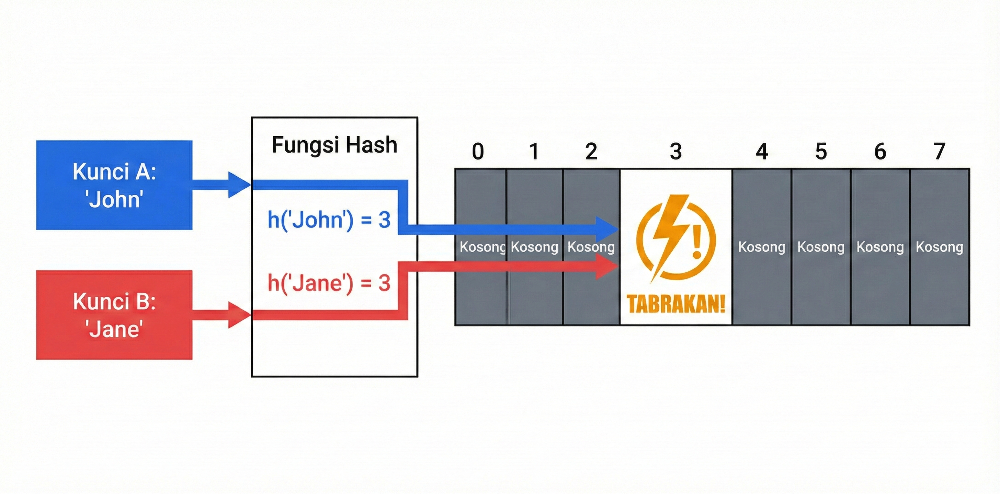
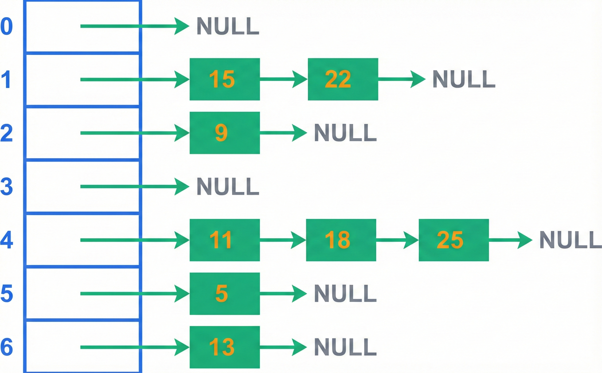
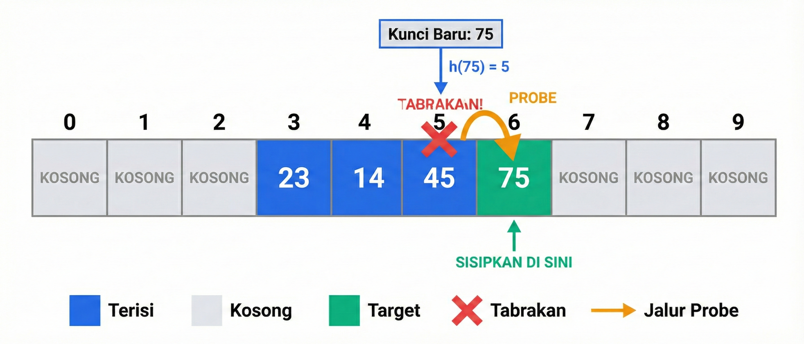

🎯 Tujuan Pembelajaran
Setelah pertemuan ini, mahasiswa mampu:
- Menjelaskan konsep hashing dan keunggulannya
- Merancang fungsi hash yang baik
- Mengidentifikasi penyebab collision
- Mengimplementasikan separate chaining
- Mengimplementasikan open addressing
- Menganalisis kompleksitas operasi hash table
📋 Agenda
Bagian 1
- Motivasi & Konsep Hashing
- Fungsi Hash
- Collision
Bagian 2
- Separate Chaining
- Open Addressing
- Load Factor & Rehashing
- Aplikasi
📖 1. Motivasi Hash Table
Permasalahan: Menyimpan & mengakses data personel berdasarkan NIK
| Struktur Data | Search | Masalah |
|---|---|---|
| Array unsorted | O(n) | Terlalu lambat |
| Array sorted | O(log n) | Insert/Delete lambat |
| BST balanced | O(log n) | Bisa tidak seimbang |
| Hash Table | O(1) | ✓ Ideal! |
Direct Addressing
Ide: Gunakan key sebagai index array langsung
int table[1000];
// Insert
table[key] = value; // O(1)
// Search
return table[key]; // O(1)
// Delete
table[key] = -1; // O(1)
⚠️ Masalah: NIK 16 digit → perlu array 10^16 slot!
Konsep Hashing
Hashing adalah teknik memetakan key dari domain besar ke domain lebih kecil menggunakan fungsi hash h(k).

Gambar 14.1: Konsep dasar hashing
Komponen Hash Table
📦 Array
Ukuran m (bucket/slot)
⚙️ Fungsi Hash
h: U → {0,1,...,m-1}
🔧 Collision Handling
Jika h(k₁) = h(k₂)
📖 2. Fungsi Hash
Karakteristik Fungsi Hash yang Baik
- Deterministic: Key sama → hash sama
- Uniform Distribution: Menyebar merata
- Efficient: Cepat dihitung O(1)
- Minimize Collision: Key berbeda → hash berbeda
Division Method
h(k) = k mod m
int hashDivision(int key, int m) {
return key % m;
}
// h(12345) dengan m = 97
// = 12345 % 97 = 70
💡 Tips: Pilih m = bilangan prima (97, 193, 389, ...)
Multiplication Method
h(k) = floor(m × (k × A mod 1))
A ≈ 0.618 (golden ratio)
int hashMultiplication(int key, int m) {
const double A = 0.6180339887;
double temp = key * A;
temp = temp - (int)temp; // Bagian fraksional
return (int)(m * temp);
}
Keuntungan: Nilai m tidak kritis, bisa power of 2
Hash untuk String
Polynomial Rolling Hash:
unsigned long hashString(const string& key, int m) {
unsigned long hash = 0;
unsigned long base = 31; // Bilangan prima
for (char c : key) {
hash = (hash * base + c) % m;
}
return hash;
}
// hash("abc", 100) = 54
🧠 Quiz: Fungsi Hash
Mengapa m = 100 bukan pilihan baik untuk division method?
Karena m = 100 = 10² hanya menggunakan 2 digit terakhir key:
- h(123456) = 56
- h(789456) = 56 → Collision!
- Tidak memanfaatkan informasi digit lain
Solusi: Gunakan bilangan prima (97, 101)
📖 3. Collision
Collision terjadi ketika dua key berbeda k₁ ≠ k₂ menghasilkan hash value sama: h(k₁) = h(k₂)

Gambar 14.2: Ilustrasi collision
Mengapa Collision Pasti Terjadi?
Pigeonhole Principle:
Jika n item dimasukkan ke m slot (n > m), minimal satu slot berisi lebih dari satu item.
Birthday Paradox:
Dalam grup 23 orang, P(2 orang birthday sama) > 50%!
Dua Pendekatan Collision Handling
| Pendekatan | Teknik | Ide Dasar |
|---|---|---|
| Separate Chaining | Linked List | Chain di setiap slot |
| Open Addressing | Probing | Cari slot kosong lain |
Contoh Collision
h(k) = k mod 7
| Key | Hash | Status |
|---|---|---|
| 3 | 3 mod 7 = 3 | OK |
| 10 | 10 mod 7 = 3 | Collision! |
| 17 | 17 mod 7 = 3 | Collision! |
| 24 | 24 mod 7 = 3 | Collision! |
Pola: Semua key bentuk 7k + 3 collision di slot 3
📖 4. Separate Chaining
Separate Chaining menyimpan semua key dengan hash sama dalam linked list di slot tersebut.

Gambar 14.3: Hash table dengan separate chaining
💻 Implementasi Insert
void insert(int key, const string& value) {
int index = hash(key);
// Cek apakah key sudah ada
for (auto& pair : table[index]) {
if (pair.first == key) {
pair.second = value; // Update
return;
}
}
// Key belum ada, tambahkan
table[index].push_back({key, value});
}
💻 Implementasi Search & Delete
// Search
string* search(int key) {
int index = hash(key);
for (auto& pair : table[index]) {
if (pair.first == key) {
return &pair.second;
}
}
return nullptr; // Not found
}
// Delete
bool remove(int key) {
int index = hash(key);
for (auto it = table[index].begin(); it != table[index].end(); ++it) {
if (it->first == key) {
table[index].erase(it);
return true;
}
}
return false;
}
Kompleksitas Separate Chaining
| Operasi | Average | Worst Case |
|---|---|---|
| Insert | O(1) | O(n) |
| Search | O(1 + α) | O(n) |
| Delete | O(1 + α) | O(n) |
α = n/m adalah load factor
📖 5. Open Addressing
Open Addressing menyimpan semua elemen dalam array. Jika slot terisi, cari slot kosong dengan probing.
| Aspek | Separate Chaining | Open Addressing |
|---|---|---|
| Struktur tambahan | Linked list | Tidak ada |
| Load factor max | > 1 | ≤ 1 |
| Cache performance | Buruk | Baik |
Linear Probing
h(k, i) = (h'(k) + i) mod m
i = 0, 1, 2, 3, ... (nomor percobaan)

Gambar 14.4: Linear probing
💻 Insert dengan Linear Probing
bool insert(int key, const string& value) {
int index = hash(key);
int i = 0;
do {
int probeIndex = (index + i) % size;
// Slot kosong - bisa insert
if (!occupied[probeIndex]) {
keys[probeIndex] = key;
values[probeIndex] = value;
occupied[probeIndex] = true;
return true;
}
// Linear probe: cek slot berikutnya
i++;
} while (i < size);
return false; // Table penuh
}
Masalah: Primary Clustering
Primary Clustering: Terbentuknya cluster (kelompok slot terisi berurutan) yang semakin besar.
Jika ada cluster panjang k:
- Key baru yang hash ke salah satu slot → cluster jadi k+1
- Probe sequence makin panjang
Quadratic Probing
h(k, i) = (h'(k) + c₁·i + c₂·i²) mod m
Bentuk sederhana: h(k, i) = (h'(k) + i²) mod m
Probe sequence untuk h'(k) = 5, m = 11:
| i | 0 | 1 | 2 | 3 | 4 |
|---|---|---|---|---|---|
| Slot | 5 | 6 | 9 | 3 | 10 |
Double Hashing
h(k, i) = (h₁(k) + i · h₂(k)) mod m
int h1(int k) { return k % m; }
int h2(int k) { return 1 + (k % (m-1)); }
int doubleHash(int k, int i, int m) {
return (h1(k) + i * h2(k)) % m;
}
✓ Menghindari clustering
✓ Distribusi probe lebih merata
🧠 Quiz: Linear Probing
Insert key 10, 22, 31, 4, 15 ke hash table m=11, h(k)=k mod 11.
Di mana posisi akhir key 15?
| Key | h(k) | Probes | Position |
|---|---|---|---|
| 10 | 10 | 10 | 10 |
| 22 | 0 | 0 | 0 |
| 31 | 9 | 9 | 9 |
| 4 | 4 | 4 | 4 |
| 15 | 4 | 4→5 | 5 |
Lazy Deletion
Masalah: Hard delete di open addressing merusak probe sequence!
Solusi: Tandai slot sebagai "DELETED" bukan "EMPTY"
- Search: lanjut probing melewati DELETED
- Insert: bisa reuse DELETED slot
- Periodic rehashing untuk cleanup
📖 6. Load Factor & Rehashing
Load Factor (α) = n / m
Rasio jumlah elemen terhadap ukuran tabel
| α | Interpretasi | Performa |
|---|---|---|
| 0.25 | 25% terisi | Sangat baik |
| 0.50 | 50% terisi | Baik |
| 0.75 | 75% terisi | Threshold standar |
| 0.90 | 90% terisi | Degradasi |
Rehashing
Rehashing adalah proses membuat hash table baru lebih besar dan memindahkan semua elemen.
Kapan rehashing?
- Load factor > threshold (0.75)
- Terlalu banyak slot DELETED
Contoh: α = 0.8 → rehash 2× → α baru = 0.4
Expected Probes (Open Addressing)
| α | Unsuccessful | Successful |
|---|---|---|
| 0.50 | 2 probes | 1.39 probes |
| 0.75 | 4 probes | 1.85 probes |
| 0.90 | 10 probes | 2.56 probes |
| 0.95 | 20 probes | 3.15 probes |
Kesimpulan: Jaga α ≤ 0.75 untuk performa baik!
📊 Perbandingan Struktur Data
| Struktur Data | Search | Insert | Delete |
|---|---|---|---|
| Array (unsorted) | O(n) | O(1) | O(n) |
| Array (sorted) | O(log n) | O(n) | O(n) |
| BST (balanced) | O(log n) | O(log n) | O(log n) |
| Hash Table | O(1) avg | O(1) avg | O(1) avg |
📖 7. Aplikasi Hash Table
Umum
- Dictionary/Map
- Set (unique elements)
- Counting/Frequency
- Caching (LRU Cache)
🎖️ Pertahanan
- Database Personel (NIK/NRP)
- Tracking Aset
- Authentication
- Activity Logging
💻 Contoh: Counting
#include <unordered_map>
// Menghitung frekuensi karakter
string text = "hello world";
unordered_map<char, int> freq;
for (char c : text) {
freq[c]++; // O(1) per karakter
}
// freq['l'] = 3, freq['o'] = 2, ...
💻 Contoh: Find Intersection
vector<int> findIntersection(const vector<int>& arr1,
const vector<int>& arr2) {
// Masukkan arr1 ke hash set - O(n)
unordered_set<int> set1(arr1.begin(), arr1.end());
// Cek arr2 yang ada di set1 - O(m)
vector<int> result;
for (int num : arr2) {
if (set1.count(num)) {
result.push_back(num);
set1.erase(num); // Avoid duplicates
}
}
return result; // Total: O(n + m)
}
Tanpa hash table: O(n × m)
📝 Ringkasan
| Konsep | Deskripsi |
|---|---|
| Hash Table | Struktur data dengan O(1) average access |
| Fungsi Hash | Division (k mod m), Multiplication, Polynomial |
| Collision | h(k₁) = h(k₂), pasti terjadi (Pigeonhole) |
| Separate Chaining | Linked list di setiap slot |
| Open Addressing | Linear, Quadratic, Double Hashing |
| Load Factor | α = n/m, threshold 0.75 |
| Rehashing | Resize table saat α tinggi |
🧠 Quiz Akhir
Hash table dengan n = 600 elemen dan m = 800 slot.
- Berapa load factor?
- Apakah perlu rehashing (threshold 0.75)?
Jawaban:
- α = n/m = 600/800 = 0.75
- α = 0.75 tepat di threshold → perlu rehashing untuk insert berikutnya
❓ Pertanyaan?
Silakan bertanya atau diskusi
Referensi: Cormen Ch.11 | Weiss Ch.5 | Hubbard Ch.8
Terima Kasih! 🙏
Struktur Data dan Algoritma
Pertemuan 14
© 2026 - CC BY 4.0